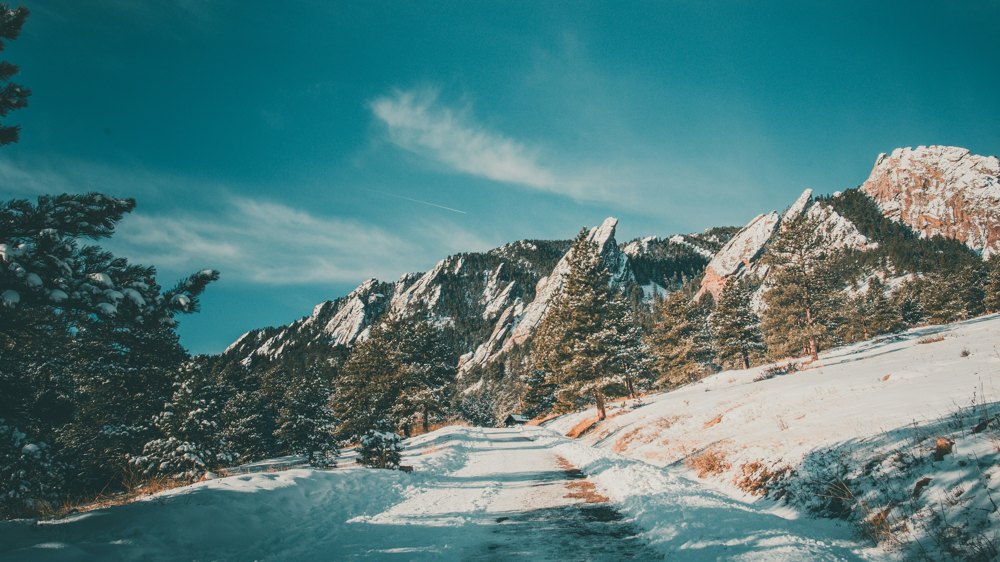

Welcome to Boulder
Boulder represents the perfect marriage of outdoor adventure and technological advancement. Set against the iconic Flatirons, this college town turned tech hub showcases what happens when natural beauty meets innovation. As home to the University of Colorado's main campus and a thriving natural foods industry, Boulder maintains its small-town charm while embracing big ideas. Whether you're exploring our extensive trail systems, experiencing the energy of Pearl Street, or joining our robust tech community, Boulder offers a lifestyle that's uniquely Colorado.
City Statistics
- Population: 105,898
- Founded: 1859
- Region: Northern Colorado, Front Range
- Classification: Suburban/Urban Mix
- Average Income: $80,243/year (20% above state average)